今日趋势
Browser Use把任务轨迹交给另一次模型调用复核：有没有成功、网站有没有拦截、输入格式有什么限制，都可以另作记录。它增加了一份证据，却仍可能误判。LLVQ当天合并的加速研究则给出更克制的结果：测到局部操作的变化，最终没有提高实际输出词速，现有运行版本也没有改变。两条消息都让“做过什么”和“得到什么”有机会分开核对。
端侧能力有另一组具体边界。tiny-voca用约450万参数生成两种英语声音，RelayVSR的MLX转换服务于四倍视频超分辨率；一个仍有陌生词读音和合成感，另一个会抹去胶片颗粒，也不修复压缩损伤。商业栏目里的资金支持判断与企业收益数字，分别来自作者分析和公司人员自报，不能当作已经审定的普遍结论。
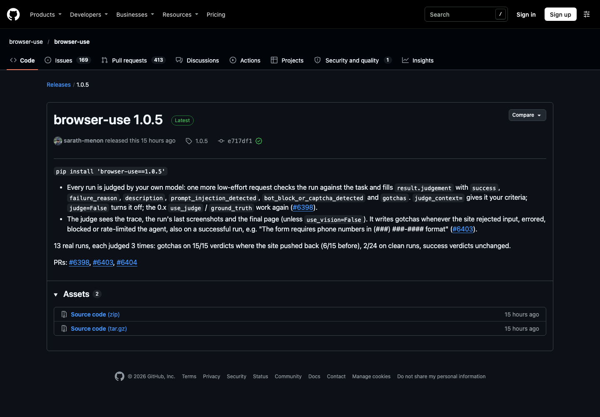
Browser Use / GitHub
BrowserUse给完成结果加一轮复核
来源: Browser Use / GitHub · 2026-11-15 · 原文链接
Browser Use发布1.0.5，每次运行后默认用用户所选模型额外发起一次低推理强度请求，依据任务与执行轨迹给出成功判断、失败原因、描述、提示注入检测、验证码或机器人拦截检测及注意事项。启用视觉时还会查看末尾截图和最终页面，用户可补充判断标准或关闭复核。官方以13次真实运行各复核3次进行检查：网站发生阻拦的15份判断全部留下注意事项，旧方式为6份；干净运行中为24份中的2份，成功判定没有变化。这是项目自测，不能据此证明复核始终正确。
Janet 锐评：
完成提示只能说明助手停下了。复核如果能留下“电话号码格式不被接受”这样的具体原因，人就少一轮对着空白结果猜测；但同一个模型再看一次，仍可能重复原来的误解。13次运行的自测提供了可讨论的起点，距离证明付款成功、预约落库或表单真正送达还有各自的证据要求。把结果依据保存下来，比把成功状态画得更绿更有用。
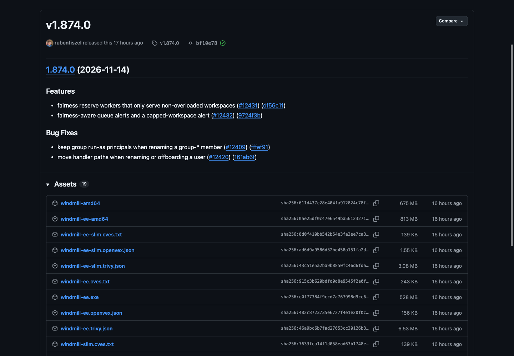
Windmill / GitHub
Windmill给闲队列预留执行位
来源: Windmill / GitHub · 2026-11-15 · 原文链接
Windmill 1.874.0新增公平性保留执行节点，只为没有过载的工作区服务，同时加入考虑公平性限制的队列告警与工作区受限告警。窗口内随后发布的1.875.0补充告警中限额起止时间的展示，以及执行节点页面上的保留设置。这是多工作区任务调度和可见性的变化，未提供统一吞吐提升数字，也不表示所有排队都会消失。
Janet 锐评：
一条特别忙的队列占满机器，旁边的小任务也会一起等。预留执行位给了其他工作区一部分喘息空间。代价是不能只按总机器利用率判断调度好坏，等待时间落在哪些人身上也有分量。
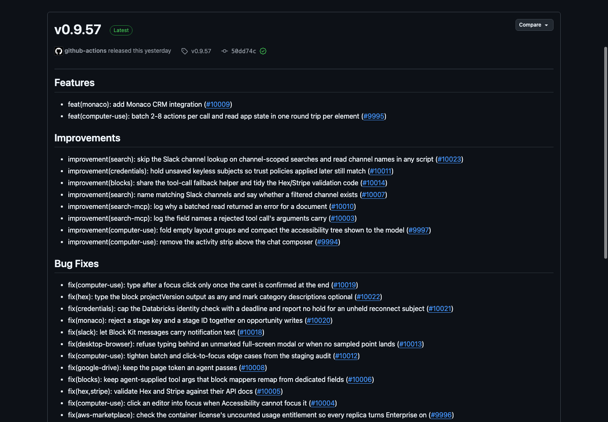
Sim / GitHub
Sim一次调用支持连续二至八个操作
来源: Sim / GitHub · 2026-11-15 · 原文链接
Sim v0.9.57为计算机操作增加每次调用批量执行2至8个动作的能力，并压缩呈现给模型的可访问性树。补丁同时限制点击聚焦后的输入时机：确认插入点在末尾后才键入；桌面浏览器也拒绝向未标记的全屏弹层后方输入。版本另接入Monaco CRM。批量动作减少往返，不等于复杂页面上的每一步都能安全省略确认。
Janet 锐评：
少几次调用很直观，输错位置的损失却不会按次数打折。这个版本把批量动作和光标、弹层约束放在一起，说明省下的等待仍得建立在页面状态足够清楚的前提上。
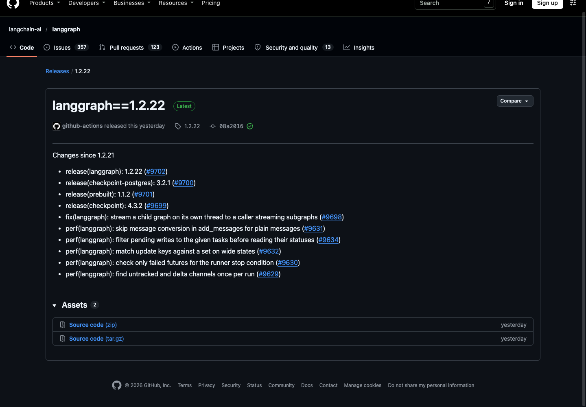
LangChain / GitHub
LangGraph给外层恢复子图消息流
来源: LangChain / GitHub · 2026-11-15 · 原文链接
LangGraph 1.2.22修复自1.2.19出现的一类流式事件遗漏：节点内以独立thread_id、checkpoint_ns或checkpoint_id调用的子图，在外层明确开启subgraphs=True时，重新向调用者传递消息和工具事件。未开启该选项时仍隔离这些事件，子图命名空间也保留既有形状。版本还包含消息转换、待处理写入筛选和宽状态更新等性能处理；不能把这一修复解释为新增多助手调度能力。
Janet 锐评：
任务在子图里继续运行，界面却收不到它的字和工具事件，使用者很容易以为程序卡住了。恢复明确订阅的消息流，补的是观察窗口；工作有没有完成，仍得看子图的实际输出。
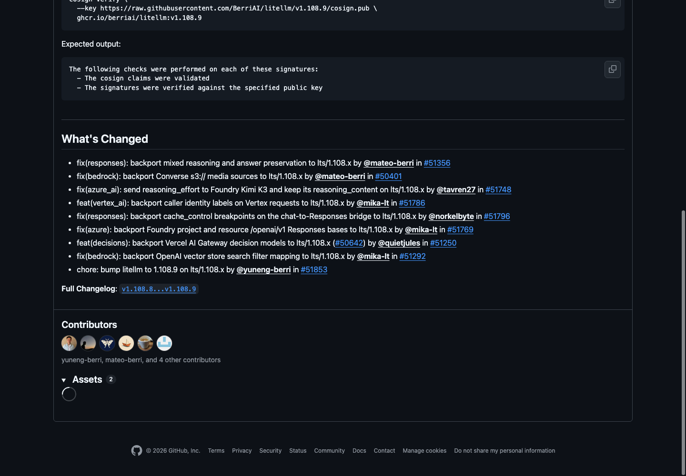
LiteLLM / GitHub
LiteLLM给长期支持版保留推理与答案
来源: LiteLLM / GitHub · 2026-11-15 · 原文链接
LiteLLM 1.108.9把多项既有修正回移至1.108.x长期支持分支，包括Responses混合推理与答案的保留、聊天转Responses桥接中的cache_control断点，以及向Azure Foundry Kimi K3传递reasoning_effort并保留reasoning_content。它也回移Vertex请求调用方身份标签和Bedrock的S3媒体来源支持。这是网关兼容性维护，不能据此称Kimi或其他上游模型在当天发布了新基础版本。
Janet 锐评：
网关能接通模型，只是第一步；推理字段、回答和缓存标记在转接时丢掉，用户看到的就已不是上游返回的完整结果。长期支持分支接到这些修正，对暂时不迁移主版本的应用更切实。
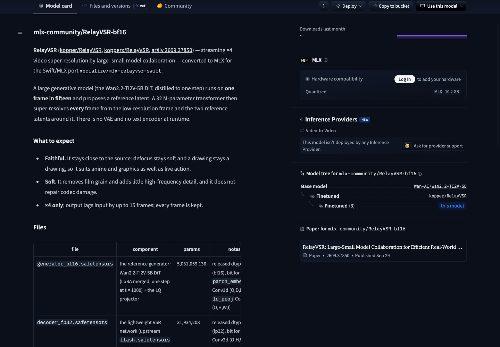
mlx-community / Hugging Face
RelayVSR转换版支持苹果端四倍超分
来源: mlx-community / Hugging Face · 2026-11-15 · 原文链接
mlx-community新公开RelayVSR-bf16权重，供独立Swift/MLX移植使用。这是既有视频超分辨率模型的转换版，并非当天新发布的基础模型：约50.31亿参数的生成组件每15帧处理一帧，约3193万参数的小网络处理全部帧；仅支持四倍放大，输出最多滞后15帧。移植作者在共享GPU的M5 Max上自报，1280×768输出每帧约0.075秒、1920×1080约0.245秒，进程峰值分别14.3GB和16.8GB。模型会减弱胶片颗粒，不修复压缩损伤；尚未对上游CUDA Triton注意力路径完成一致性验证。
Janet 锐评：
四倍分辨率容易被理解成四倍细节，模型卡却把会变软、会去掉颗粒写得很直白。对做影像的人，保留原来的失焦和绘画质感可能有价值，清掉本来想保留的颗粒也可能是损失。这里的速度来自一台M5 Max和特定输出尺寸，不能直接换算成所有苹果设备的实时能力；转换版值得试，画面取舍仍在具体素材里。
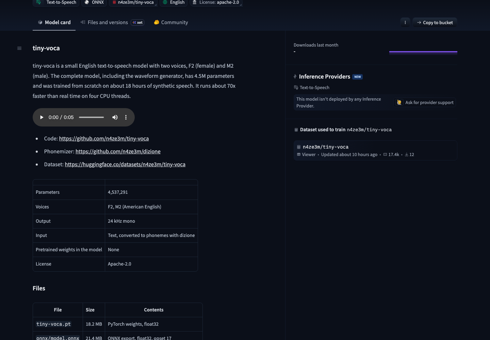
n4ze3m / Hugging Face
tiny-voca用四百五十万参数生成英语语音
来源: n4ze3m / Hugging Face · 2026-11-15 · 原文链接
独立作者发布tiny-voca，完整模型含波形生成部分共4,537,291参数，PyTorch权重约18.2MB，提供一女一男两种美式英语声音，输出24kHz单声道音频。项目同时公开代码、权重与约18小时合成训练语音的数据，许可标为Apache-2.0；支持PyTorch、ONNX和浏览器WebAssembly。作者自报四个CPU线程约为实时速度的70倍，训练用一张RTX 4090耗时7.7小时。它只支持英语、不能克隆声音，陌生词和不规则拼写可能读错；单次上限512个token、32秒，长文需分句。
Janet 锐评：
一个网页能在本地把英语读出来，18MB级权重让这件事更容易随应用分发。可读得快并不等于读得好，名字、日期和长句会把差别放大；它的训练音频本身也是合成的。这样的小模型适合让人检查轻量朗读的成本与局限，不能因为有男女两种声音，就当成多语种播音员或人物声线复制工具。
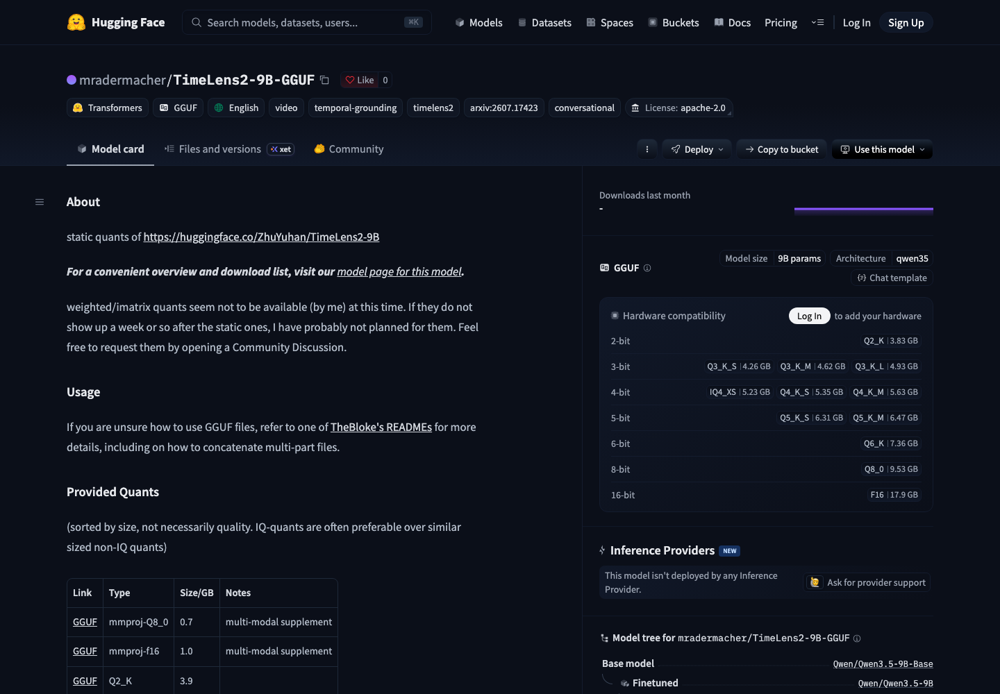
mradermacher / Hugging Face
TimeLens量化版给视频定位提供下载
来源: mradermacher / Hugging Face · 2026-11-15 · 原文链接
mradermacher新公开TimeLens2-9B的GGUF转换版，来源是基于Qwen3.5-9B微调的视频时间定位模型：输入视频与文字问题，输出相关片段的秒数区间。转换页列出Q4_K_M约5.7GB，另列约0.7GB的Q8_0多模态投影文件；这些是文件体积，不是完整运行内存。当天新增的是社区量化产物，原模型和研究更早；有GGUF下载也不能单独证明任意播放器或推理引擎都支持其视频输入链路。
Janet 锐评：
找出一段话对应素材的哪几秒，比再生成一篇视频摘要更接近剪辑台上的小麻烦。量化降低了下载门槛，时间定位是否准确、视频预处理能否接上，仍然决定它能不能省下人工寻找片段的时间。
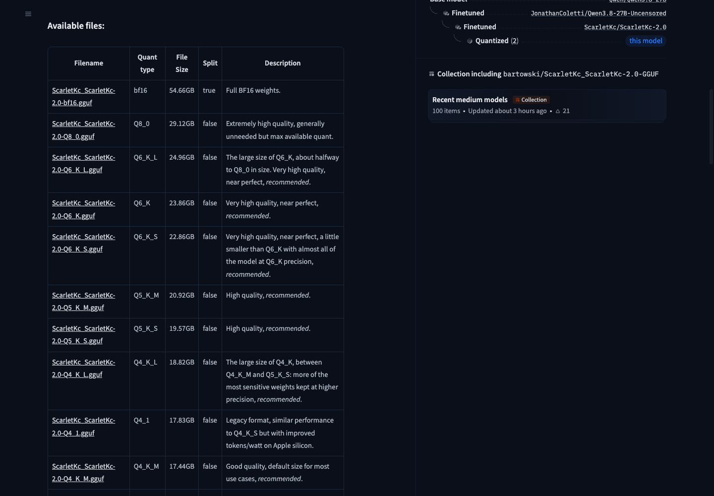
bartowski / Hugging Face
ScarletKc转换版用量化压缩视觉权重
来源: bartowski / Hugging Face · 2026-11-15 · 原文链接
bartowski发布ScarletKc-2.0的独立GGUF量化转换，模型卡列出原检查点280亿参数，支持文字和配合mmproj投影文件的图像输入，并保留多token预测相关说明。Q4_K_M文件为17.44GB，完整BF16权重为54.66GB；两者均不等于运行时总内存。转换使用llama.cpp b12180及imatrix校准。新事件是该转换仓库与文件公开，不能将其写成Qwen官方新模型，也未见足以证明各精度等效的独立评测。
Janet 锐评：
17.44GB让下载清单短了一截，却没有替人安排视觉投影、上下文缓存和实际内存。量化文件的标签描述存储方式；对图文任务保留了多少能力，还得由对应任务的测试回答。
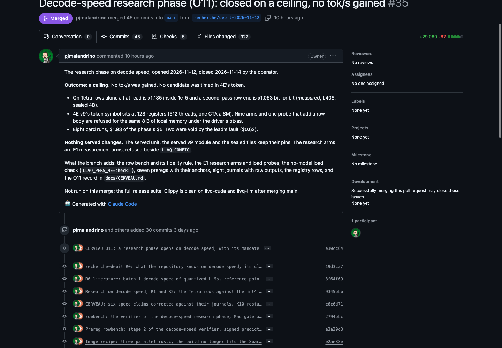
pjmalandrino / GitHub
LLVQ公开加速实验，未提高词速
来源: pjmalandrino / GitHub · 2026-11-15 · 原文链接
独立LLVQ Rust实现合并一阶段解码速度研究，原始记录明确写出：没有获得额外token每秒，已分发的运行模块与量化文件保持原固定版本。该阶段针对L40S上的4B模型记录局部行读取测试，部分操作虽有变化，若干新增运算路径却因编译后的本地内存要求未通过加载，不能换算成整轮加速。作者列出8次显卡运行、花费1.93美元，其中两次因负责人操作问题作废，耗费0.62美元；完整发行测试套件没有在本次合并重新运行。这是当天公开的研究结项记录，不是新模型性能提升。
Janet 锐评：
一个局部算子快了18.5%，听上去已经够写宣传标题；整枚token却没有因此更快。把加载失败、无效运行和没有复跑的测试一起留下，外部读者才知道钱花在了哪里，也知道哪些结论暂时拿不到。负结果不保证项目可靠，但至少没把一条局部曲线偷偷换成用户能感受到的速度；这种记录比又一个无法复现的倍数更有信息。
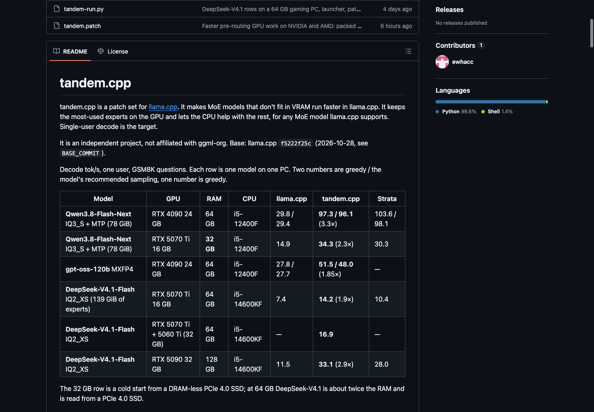
ewhacc / GitHub
tandem.cpp用显存与内存协同跑大模型
来源: ewhacc / GitHub · 2026-11-15 · 原文链接
独立llama.cpp补丁项目tandem.cpp在窗口内提交CUDA/HIP路径优化并更新ROCm实测表，采用热点专家留在GPU、其余由CPU和存储配合处理的方式，面向单用户解码。作者以相同DeepSeek-V4.1-Flash IQ2_XS量化、139GiB专家权重自报：RTX 5070 Ti 16GB、64GB内存与i5-14600KF上，贪心解码从原版7.4升至14.2 token每秒，模型超过内存的部分需从SSD流入。AMD RX 7900 XTX也已实测，但部分AMD专用引擎仍更快，Vulkan暂不支持；这不构成DeepSeek新模型发布。
Janet 锐评：
64GB内存能跑超过自身容量的模型，靠的是持续搬运和等待，不是容量限制突然消失。作者把CPU、显卡、量化与SSD条件一起写出，才让14.2这个数字有可比较的对象；换一台电脑，瓶颈可能就换了位置。
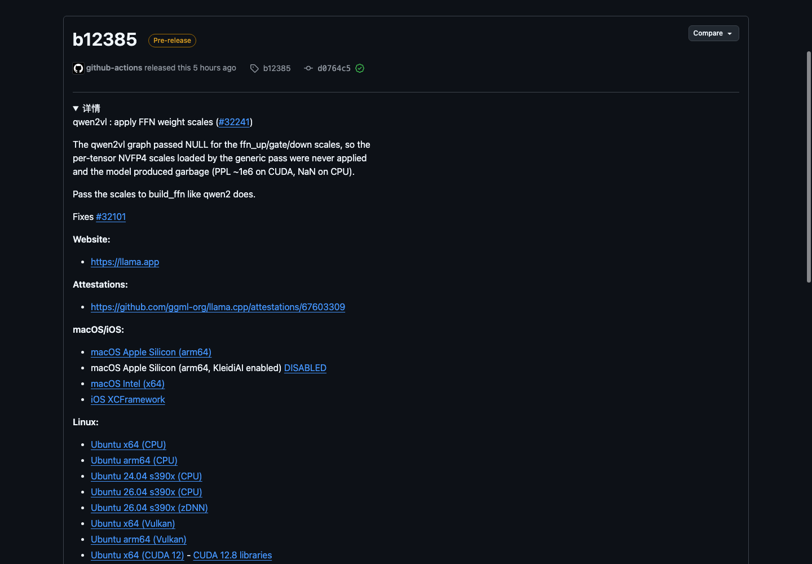
ggml-org / GitHub
llama.cpp给视觉量化补上前馈缩放
来源: ggml-org / GitHub · 2026-11-15 · 原文链接
llama.cpp构建b12385纳入Qwen2VL图的前馈层权重缩放修复。原路径虽已载入NVFP4缩放值，构图却传入空值，导致nvidia/Qwen2.5-VL-7B-Instruct-NVFP4无警告地产生异常结果。提交者在GB10与指定WikiText-2配置上测试，CUDA困惑度由约104万降至9.3759，CPU由非数值结果恢复至9.1177。修复仅改变并测试该架构路径，不代表所有量化模型都已排除类似问题。
Janet 锐评：
能载入、没有报错，也可能一直在算错。这里修正的是缩放值有没有参与计算；模型文件相同，运行路径不同，结果就能差到完全失真，排查质量问题时不能只盯着权重来源。
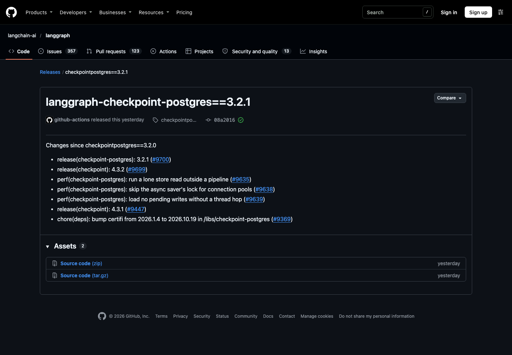
LangChain / GitHub
LangGraph给连接池减少检查点等待
来源: LangChain / GitHub · 2026-11-15 · 原文链接
同日LangGraph发行中的checkpoint-postgres 3.2.1，针对单次存储读取、异步保存和待处理写入加载减少额外开销：单次读取可不经pipeline，使用连接池时跳过异步保存器的锁，空待处理写入不再为读取切换线程。本条仅补充前文同组发行的持久化侧变化，没有另报一轮模型或代理发布；官方记录未给出通用延迟下降百分比。
Janet 锐评：
一个助手的等待，可能积在数据库前那几次不起眼的切换里。减少这些开销有明确作用范围，连接池和读写形态不同，收益也会不同；没有测量数字时保留这个边界，比承诺处处提速更诚实。
投资与商业
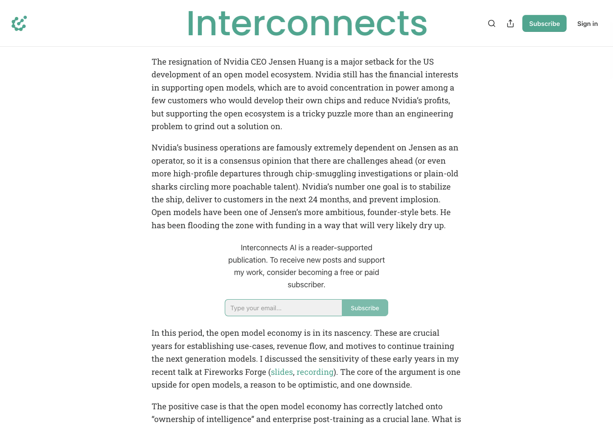
Nathan Lambert / Interconnects
Lambert新分析追问开放模型资金来源
来源: Nathan Lambert / Interconnects · 2026-11-15 · 原文链接
Nathan Lambert当天发表《没有Jensen的开源AI》，分析英伟达此前已发生的管理层变化可能怎样影响美国开放模型的资金支持与政治协调。他认为，英伟达仍有避免客户算力集中、支持开放模型的商业动机，但创始人式的大额投入未必持续；下游市场规模和收入仍待形成。这是当天新分析，基础人事事件较早，其对资金收缩的判断是作者预测，不是英伟达公布的预算取消或确定退出开放权重项目。
Janet 锐评：
免费拿到权重的人，不会因此免掉训练下一代模型的账单。Lambert担心的是谁愿意持续垫这笔钱，答案仍未落定；把这种担忧和已经宣布的砍预算区分开，才能看见开放模型的经营难题。
SiliconANGLE / Paul Gillin
AT&T称已部署近五百条代理流程
来源: SiliconANGLE / Paul Gillin · 2026-11-15 · 原文链接
SiliconANGLE当天发布对AT&T企业AI应用的新报道，引用其数字化转型与AI负责人Luke Corbin本月较早在波士顿活动的发言：已投产近500条代理工作流，计划一年内增加至约三倍；每天处理约450亿AI token，每月平台处理逾100万笔事务。报道称面向客户的流程先保留人工监督，在允许的风险范围内准确率达到百分之九十几的中高段才转为自主执行。上述规模及一年五倍回报均为公司人员自报；当天是新报道，不是500条流程同时上线。
Janet 锐评：
450亿token是使用量，五倍回报是另一种计量，两个数字不会自动互相证明。更能解释落地方式的是它保留了客户流程的人工观察期：先看具体业务能不能承受错误，再讨论把多少步骤交出去。
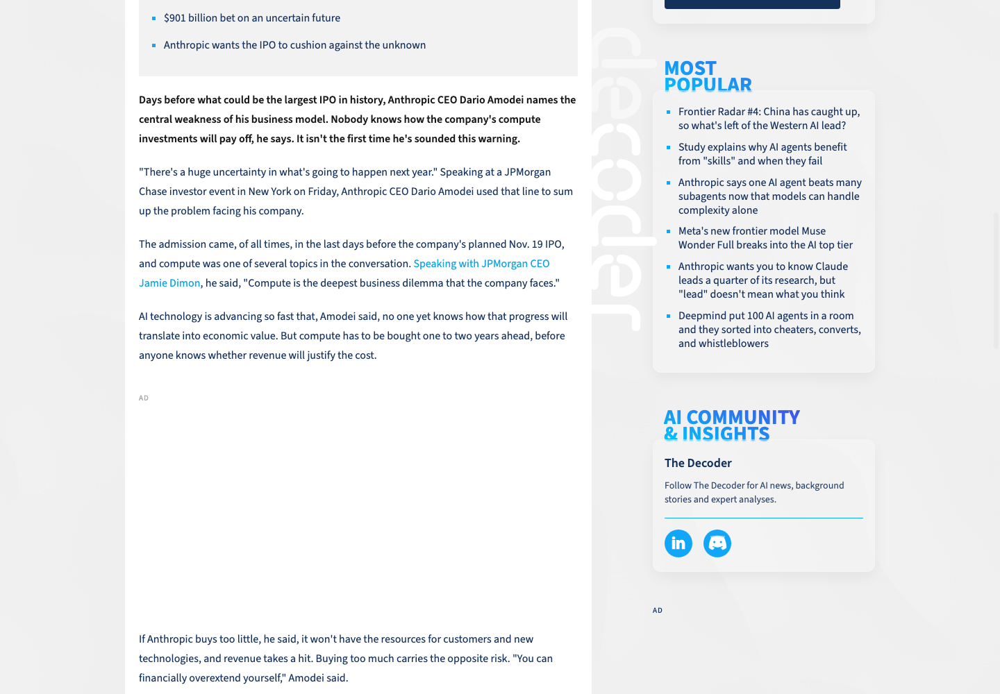
The Decoder / Matthias Bastian
Amodei新解读追问提前购买算力的代价
来源: The Decoder / Matthias Bastian · 2026-11-15 · 原文链接
The Decoder当天发表对Dario Amodei算力采购观点的分析，基础对话发生于前一天的摩根大通投资人活动。文章梳理他的核心矛盾：能力通常需提前一至两年购买，收入能否覆盖尚不确定；买少会限制服务与增长，买多可能财务过度扩张。文章同时引用其现金缓冲、较少前付采购和需求超预期时转向现货市场的说法。这是当天新报道与解读，相关策略和毛利评价属于当事人陈述，不是已证明能消除风险的财务结论。
Janet 锐评：
把采购时间提前两年，收入预测的小偏差就会变成很大的现金差额。现货市场给扩张留了余地，也可能有价格和供给代价；现金缓冲买到的是犯错空间，不能买到对未来需求的准确答案。